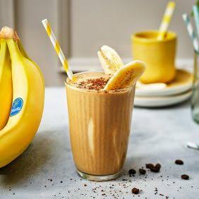

Banana Coffee Frappe Recipe

The Banana Coffee Frappe is a refreshing and energizing drink that combines the natural sweetness of bananas with the bold flavor of coffee. Perfect for a hot day or as a morning pick-me-up!
Ingredients
- 1 large scoop vanilla ice cream
- 1 tsp instant coffee powder
- ½ banana, chopped
Steps
- Combine all ingredients in a blender.
- Blend until smooth and frothy.
- Serve immediately.
Back to Home